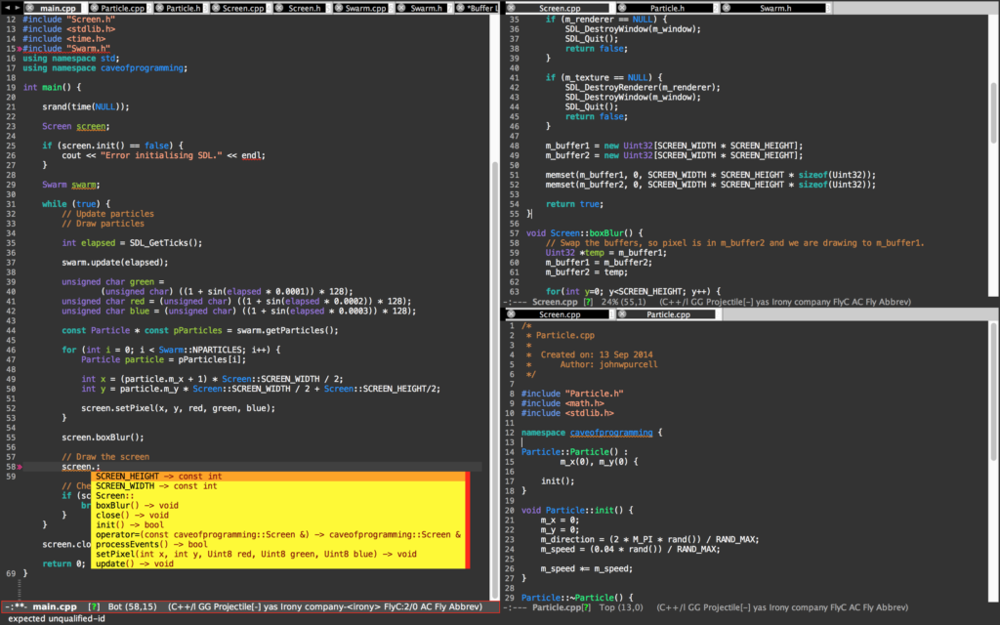

Emacs settings
There are some modes I used to turn my emacs into a powerful IDE environment for c++, python and latex editing. So I post it here to share with anyone who might have interest in using emacs as main editor.

In my OS X, I have installed those packages and Lisp scripts including, MELPA package manager, AUCTeX, irony-mode, company-mode, highlight-symbol, flycheck, company-irony-c-header, auto-complete, ac-math, Yasnippet, Neo Tree, company-auctex, ggtags, cpputils-camke, pyenv-mode, anaconda-mode, languagetool
For more information about c++ IDE environment settings please see this amazing introduction.
Here is my emacs/aquamacs setting file:
;; This is the Aquamacs Preferences file. ;; Add Emacs-Lisp code here that should be executed whenever ;; you start Aquamacs Emacs. If errors occur, Aquamacs will stop ;; evaluating this file and print errors in the *Messags* buffer. ;; Use this file in place of ~/.emacs (which is loaded as well.) ;; (package-initialize) ;; (load-theme 'tsdh-dark t) ;; MELPA package (require 'package) (add-to-list 'package-archives '("melpa" . "https://melpa.org/packages/")) (when (< emacs-major-version 24) ;; For important compatibility libraries like cl-lib (add-to-list 'package-archives '("gnu" . "http://elpa.gnu.org/packages/"))) (package-initialize) (load-theme 'tsdh-dark t) ;; load theme ;; maybe these two lines can be removed later. (setq initial-frame-alist '((left . 50) )) (smart-frame-positioning-mode nil) (ac-config-default) ;; load auto-complete ;; latex ;; (setq TeX-auto-save t) ;; (setq TeX-parse-self t) ;; (setq-default TeX-master nil) (add-hook 'LaTeX-mode-hook 'visual-line-mode) (add-hook 'LaTeX-mode-hook 'flyspell-mode) (add-hook 'LaTeX-mode-hook 'LaTeX-math-mode) (add-hook 'LaTeX-mode-hook 'turn-on-reftex) (setq reftex-plug-into-AUCTeX t) ;; irony-mode (add-hook 'c++-mode-hook 'irony-mode) (add-hook 'c-mode-hook 'irony-mode) (add-hook 'objc-mode-hook 'irony-mode) ;; replace the `completion-at-point' and `complete-symbol' bindings in ;; irony-mode's buffers by irony-mode's function (defun my-irony-mode-hook () (define-key irony-mode-map [remap completion-at-point] 'irony-completion-at-point-async) (define-key irony-mode-map [remap complete-symbol] 'irony-completion-at-point-async)) (add-hook 'irony-mode-hook 'my-irony-mode-hook) (add-hook 'irony-mode-hook 'irony-cdb-autosetup-compile-options) ;; company ;;(add-hook 'after-init-hook 'global-company-mode) ;; disable company to work in all case (add-hook 'c++-mode-hook 'global-company-mode) ;; to prevent python has weird autocomplete. (add-hook 'c-mode-hook 'global-company-mode) ;; added to enable c++ and c mode (eval-after-load 'company '(add-to-list 'company-backends 'company-irony)) ;; highlight symbols (require 'highlight-symbol) (global-set-key [(control f3)] 'highlight-symbol) (global-set-key [f3] 'highlight-symbol-next) (global-set-key [(shift f3)] 'highlight-symbol-prev) (global-set-key [(meta f3)] 'highlight-symbol-query-replace) ;; flycheck (global-flycheck-mode) ;; company-irony-c-headers (require 'company-irony-c-headers) ;; Load with `irony-mode` as a grouped backend (eval-after-load 'company '(add-to-list 'company-backends '(company-irony-c-headers company-irony))) ;; auto-complete & ac-math (require 'package) (package-initialize) (require 'auto-complete) (require 'auto-complete-config) (ac-config-default) (require 'ac-math) (add-to-list 'ac-modes 'latex-mode) ; make auto-complete aware of `latex-mode` (defun ac-LaTeX-mode-setup () ; add ac-sources to default ac-sources (setq ac-sources (append '(ac-source-math-unicode ac-source-math-latex ac-source-latex-commands) ac-sources)) ) (add-hook 'LaTeX-mode-hook 'ac-LaTeX-mode-setup) (global-auto-complete-mode t) (setq ac-math-unicode-in-math-p t) ;; start yasnippet (require 'yasnippet) (yas-global-mode 1) ;; neotree (add-to-list 'load-path "/some/path/neotree") (require 'neotree) (global-set-key [f8] 'neotree-toggle) ;; company auctex (company-auctex-init) ;; namespace c++ indent ;; telling .h file is using c++ mode (add-to-list 'auto-mode-alist '("\\.h\\'" . c++-mode)) ;; indenting c++ mode (defun my-c-setup () (c-set-offset 'innamespace [0])) (add-hook 'c++-mode-hook 'my-c-setup) ;; Projectile (projectile-global-mode) ;; ggtags (require 'ggtags) (add-hook 'c-mode-common-hook (lambda () (when (derived-mode-p 'c-mode 'c++-mode 'java-mode 'asm-mode) (ggtags-mode 1)))) (define-key ggtags-mode-map (kbd "C-c g s") 'ggtags-find-other-symbol) (define-key ggtags-mode-map (kbd "C-c g h") 'ggtags-view-tag-history) (define-key ggtags-mode-map (kbd "C-c g r") 'ggtags-find-reference) (define-key ggtags-mode-map (kbd "C-c g f") 'ggtags-find-file) (define-key ggtags-mode-map (kbd "C-c g c") 'ggtags-create-tags) (define-key ggtags-mode-map (kbd "C-c g u") 'ggtags-update-tags) (define-key ggtags-mode-map (kbd "M-,") 'pop-tag-mark) ;; semantic (semantic-load-enable-primary-exuberent-ctags-support) ;; define c++ file extension types (defvar c-files-regex ".*\\.\\(c\\|cpp\\|h\\|hpp\\)" "A regular expression to match any c/c++ related files under a directory") (defun my-semantic-parse-dir-v2 (root regex) " This function is an attempt of mine to force semantic to parse all source files under a root directory. Arguments: -- root: The full path to the root directory -- regex: A regular expression against which to match all files in the directory " (let ( ;;make sure that root has a trailing slash and is a dir (root (file-name-as-directory root)) (files (directory-files root t )) ) ;; remove current dir and parent dir from list (setq files (delete (format "%s." root) files)) (setq files (delete (format "%s.." root) files)) ;; remove any known version control directories (setq files (delete (format "%s.git" root) files)) (setq files (delete (format "%s.hg" root) files)) (while files (setq file (pop files)) (if (not(file-accessible-directory-p file)) ;;if it's a file that matches the regex we seek (progn (when (string-match-p regex file) ;; get if buffer is open or open it if it's not (setq buff (get-file-buffer file)) (setq opened-buffer nil) (when (not buff) (progn (setq opened-buffer t) (setq buff (find-file-noselect file)) )) (switch-to-buffer buff) ;; parse the buffer with semantic (semantic-fetch-tags) ;; if we opened the buffer cleanup before proceeding (when opened-buffer (kill-buffer (buffer-name)) ) )) ;;else if it's a directory (my-semantic-parse-dir file regex) ) ) ) ) (defun my-semantic-parse-current-dir (regex) " Parses all files under the current directory matching regex " (my-semantic-parse-dir (file-name-directory(buffer-file-name)) regex) ) (defun lk-parse-curdir-c () " Parses all the c/c++ related files under the current directory and inputs their data into semantic " (interactive) (my-semantic-parse-current-dir c-files-regex) ) (defun lk-parse-dir-c (dir) "Prompts the user for a directory and parses all c/c++ related files under the directory " (interactive (list (read-directory-name "Provide the directory to search in:"))) (my-semantic-parse-dir (expand-file-name dri) c-files-regex) ) (provide 'lk-file-search) ;; to here ;; cpputils-camke (add-hook 'c-mode-common-hook (lambda () (if (derived-mode-p 'c-mode 'c++-mode) (cppcm-reload-all) ))) ;; OPTIONAL, somebody reported that they can use this package with Fortran (add-hook 'c90-mode-hook (lambda () (cppcm-reload-all))) ;; OPTIONAL, avoid typing full path when starting gdb (global-set-key (kbd "C-c C-g") '(lambda ()(interactive) (gud-gdb (concat "gdb --fullname " (cppcm-get-exe-path-current-buffer))))) ;; OPTIONAL, some users need specify extra flags forwarded to compiler (setq cppcm-extra-preprocss-flags-from-user '("-I/usr/src/linux/include" "-DNDEBUG")) ;; indent (setq-default c-basic-offset 4) ;;============================================================== ;; python mode ;;pyenv-mode (require 'pyenv-mode) (defun projectile-pyenv-mode-set () "Set pyenv version matching project name." (let ((project (projectile-project-name))) (if (member project (pyenv-mode-versions)) (pyenv-mode-set project) (pyenv-mode-unset)))) (add-hook 'projectile-switch-project-hook 'projectile-pyenv-mode-set) ;; Anaconda mode (add-hook 'python-mode-hook 'anaconda-mode) ;; language tool (require 'langtool) (setq langtool-language-tool-jar " /my/path/to/languagetool-commandline.jar" langtool-mother-tongue "zh" langtool-disabled-rules '("WHITESPACE_RULE" "EN_UNPAIRED_BRACKETS" "COMMA_PARENTHESIS_WHITESPACE" "EN_QUOTES"))</pre>